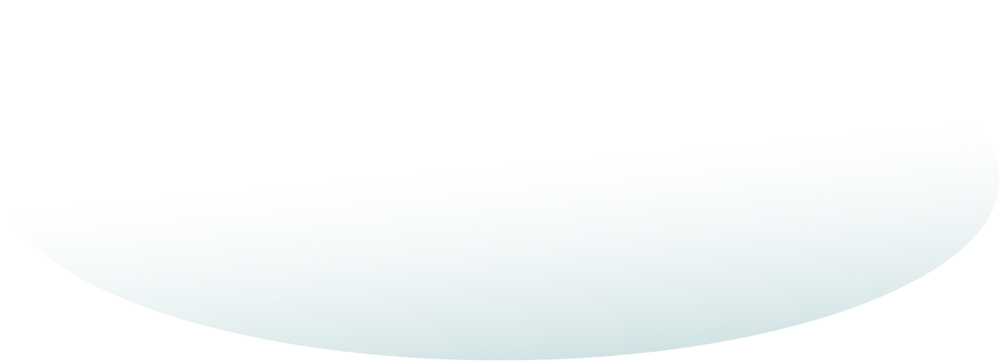

About
just to get to know me better.
- new PersonalInfo([
-
- 'name' => 'Jan Zavrl',
- 'location' => 'Ljubljana, Slovenia',
- ])->addSkills([
-
- 'backend_developer' => TRUE,
- 'frontend_developer' => TRUE,
- 'devops' => TRUE,
- 'ux_ui' => TRUE,
- ]);
- new ContactInfo([
-
- 'email' => 'jzavrl@gmail.com',
- 'linkedin' => 'linkedin.com/in/janzavrl',
- 'drupal' => 'drupal.org/u/jzavrl',
- 'github' => 'github.com/jzavrl',
- ]);
Worked in a digital agency, a development studio and founded my own company. 12 years of experience in Drupal, backend/frontend development, UX/UI design, devops. Self-taught. Won awards. Attended and organised Drupal events. Spoke in them.
Good food, good company, lots of sports.
That wasn't so bad, right?
My path started in 2010 when I joined the ranks of ENKI, a web agency, as a web designer. Quickly, I moved to development, more specifically to Drupal as a frontend and backend developer. It became an instant connection which is still very much strong to this day. With ENKI, we received several digital awards for specific projects as well as an overall best digital agency in Slovenia for several years in a row.
After ENKI, I founded my own company called Iuvo where I worked on full scope projects for clients all around the world. During this time I also received the prestigious Site of the day and Honorable mention awards on CSS Design Awards and Awwwards sites.
Later on, I crossed paths and joined forces with AGILEDROP where my role became the team lead on projects spanning from e-commerce to big corporate websites to completely custom web applications.
Moving on I joined a London based studio called NDP as a senior developer, where I lead, planed and developed complex websites and applications, working in sectors ranging from corporate, education. charity and all the way to medicine and health care.
In between I also passed the tests and interviews they threw at me at Toptal, where I became one of their Drupal developers for hire. They do pride themselves on hiring the top 3% freelance talents in the world, so I'm definitely mentioning that.
My last adventure was with the amazing people at Dropsolid, a Ghent based digital agency, where I took on challenges from the biggest clients in the country, as well as beverages from Belgium's world known breweries.
My focus was always Drupal and my goal was to deliver the best possible solution in terms of UX/UI as well as code structure, and making sure I enjoy every minute of it.
I'm also self-taught, so you can bet I can navigate my way around any obstacle you can throw at me better than a Roomba vacuum cleaner.
During this time I have also attended several Drupal Camps and Drupal Dev Days across Europe where in some of them I also gave a session. I have also been involved in my local Drupal community, attending and helping organise meetups and camps.
Have I mentioned I'm also a certified Drupal 8 Grand Master? No? Well, I'm a certified Drupal 8 Grand Master. There.
Other than that I enjoy good food - including preparing it, with a side of a good company. I'm also passionate about sports. Watch it, play it, discuss it, you name it. Currently, my heart lies between two wheels of a road bike, where I sweat, curse and laugh my way up and down the local hills and an occasional race here and there. I also played football on a club level. Now you might be wondering which one. I'll give you a hint - it involves a round ball which you kick with your feet. Hence, the name.
I also mix it up with some tennis, gym, hiking, kite-surfing, cross country skiing, ... Well, let's just say, Drupal has its fair share of stressful moments, which need to be neutralized, right?.
You wish you went for the shorter version, don't you?